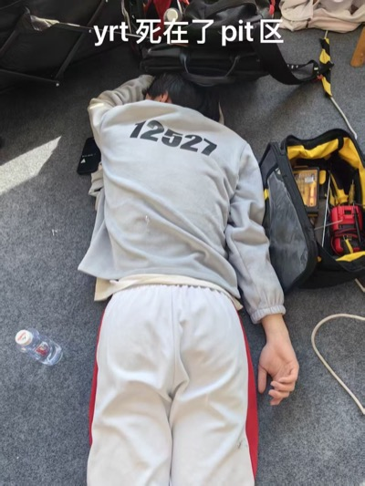
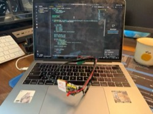
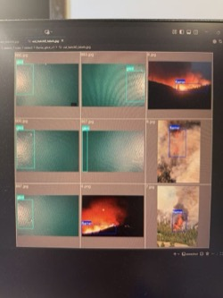

Adventure-X 选手 / 16岁 / 男生 / 人大附中高中生
微信号：fishfishfish_091214
有关沙漠农业相关的机器人/无人机，尤其针对新疆等地区的农业，解决采收/灌溉问题；本人是新疆人，平时有关注一些家乡的农业之类的东西。欢迎队员提出自己的想法
欢迎任何类型的队友和我组队！！尤其欢迎硬件技术大佬：）（本人工程能力一般，手跟不上脑子😭）



最喜欢的动漫是《彻夜之歌》，最喜欢的漫画是《不死不幸》，看火影 咒术 鬼灭 jojo 刃牙 长瀞同学
冷静，温和，除了打火影忍者手游时以外基本都不会红温
喜欢听日摇/日流/中西部情绪，中文最爱听周杰伦
创办了CS2 黄庄major电竞锦标赛，后与同学共同创立了BHML高中电竞联赛，吸引超过10所高中的Counter-Strike战队参加
长跑爱好者，最喜欢的跑鞋是 李宁飞电5 elite
我是网瘾少年，我们绝对有共同话题：明日之后8年老玩家，我的世界10年玩家，CS2 670h B+，全成就通关逃离后室，玩过塔科夫和暗区突围，玩野炊王泪，火影忍者北京市第4金鸣